7 km Distancia
Circular TipoSobre la ruta
Empezando la ruta en la plaza Duques de la Victoria, por detrás de la iglesia cogemos la calle Manuel Marure que nos llevará a Entrepuentes, zona donde se unen el río Asón y su principal afluente, el río Gándara. Aquí encontraremos un antiguo puente medieval, un molino (ahora propiedad privada) y la presa Don Cecilio. Siguiendo la carretera atravesaremos una zona ajardinada y área recreativa que nos lleva al Bº Vegacorredor. Una vez aquí subimos por la carretera de la izquierda en dirección al Bº Helguero, el cual atravesaremos y donde podremos visitar la Fuente Iseña, manantial que abastece Ramales. Siguiendo el camino regresaremos hasta el Humilladero Ánima de Iseña y desde aquí, volveremos por el mismo recorrido hasta la plaza.
 Zona Picnic
Zona Picnic
 Parque infantil
Parque infantil
 Apta para niños
Apta para niños
 Calzada compartida
Calzada compartida
 Apta para bicicletas
Apta para bicicletas
 Recurso hidrico
Recurso hidrico
 Apta para carritos
Apta para carritos